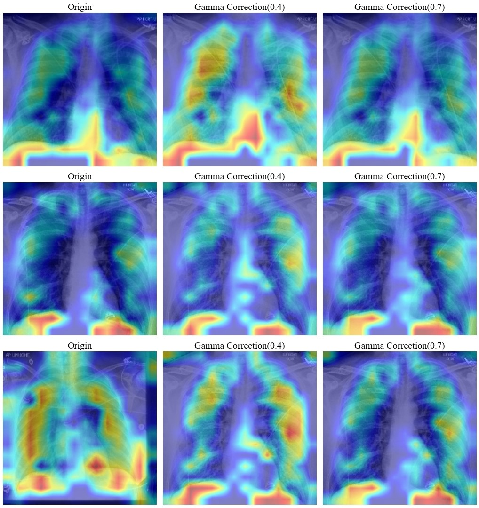

National Yang Ming Chiao Tung University
Institute of Multimedia Engineering
Sep 2024 -
I am a graduate student in Multimedia Engineering at Yang Ming Chiao Tung University and currently working with Professor Yu-jun Yan.
I graduated from the Computer Science Department at the same university. During my undergraduate studies, I completed the graduation project "Exploring the Effect of Image Pre-processing on Classification Performance of ViT Model"under the guidance of Professor Tsai-pei Wang.
This academic journey has enriched my professional knowledge and fostered my abilities in problem-solving and research innovation. I am passionate about applying advanced multimedia technologies to address practical challenges and look forward to furthering my studies and making contributions in the future.
Sep 2024 -
Sep 2019 - Jun 2024
Sep 2016 - Jun 2019

We attempt to enhance the classification performance of the Vision Transformer model on the CheXpert dataset using various preprocessing techniques. We analyze the predicted results and the heatmaps generated by the model to investigate the impact of these processing methods on the model.